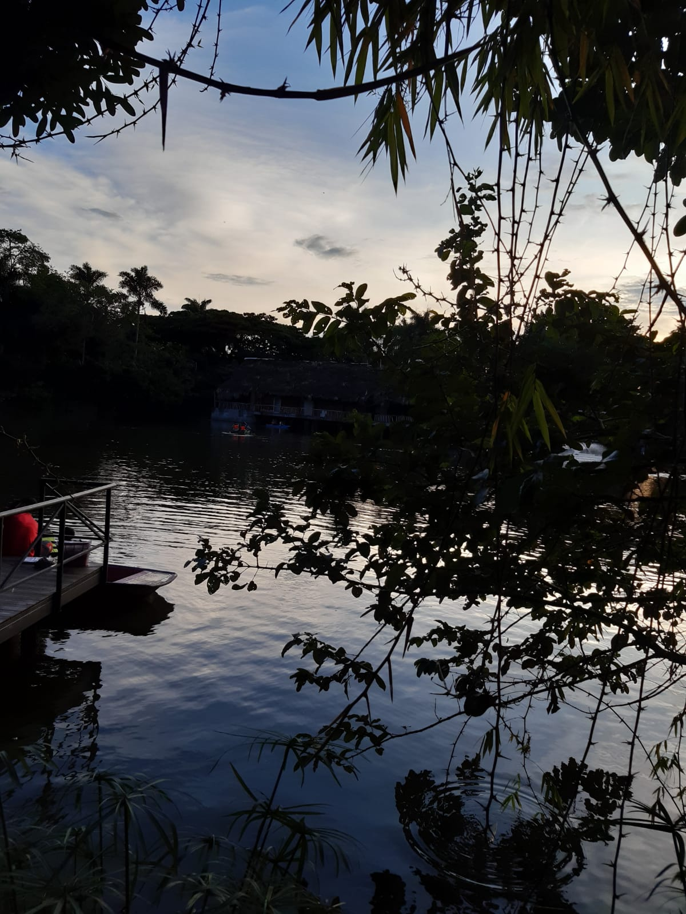
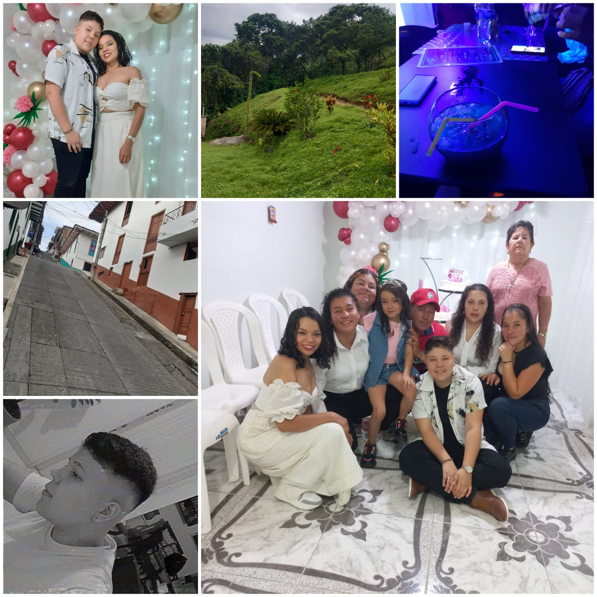

| viaje a La Celia Risaralda | |||
|---|---|---|---|

16 de marzo 2023 |
En este hermoso municio se destaca como actrativo turistico la practica del ecopturismo o el senderismo,con recorridos por los paraques naturales como Verdun y llegando hasta el tatama. |

16 de Marzo 2023 |
Bajo el manto azul del cielo, el lago reposa en calma, sus orillas acogen la danza de los arboles y los pajaros trazan melodias en el aire. En este santuria de quietud y misterio, el tiempo se detiene y los corazones encuetran reposo. El lago joya escondida de la naturaleza,nos invita a perdernos en su magia y serenidad. |

20 de Marzo 2023 |
lugar emblematico que ofrece vistas impresionantes del paisaje circundate. ubicado en lo alto de la colina, con el fin de proporcionar una panoramica espetacular de los campos verdes, las montañas y los valles que caracterizan la region, es un destino popular por los vistantes que buscan disfrutar de la belleza de la naturaleza de este hermoso municipio y lugares aledaños. |

22 de marzo 2023 |
cada instante es una celebracion de la conexion y el cariño que une la familia. Estos momrnyos son los cimientos de la felicidad y el apoyo mutuo que perdura a lo largo del tiempo. |

22 de Marzo 2023 |
El mejor cafe que he poditdo tomar en toda me existencia, ya que en el municio de Sabturios Risaralda se da el cafe con altos estandares de calidad, y la experiensia de los agricultores y productores. |

21 de Marzo 2023 |
Memorias con las personas mas importante en vida y que hacer, que todos los lugares sean maravilloso. |